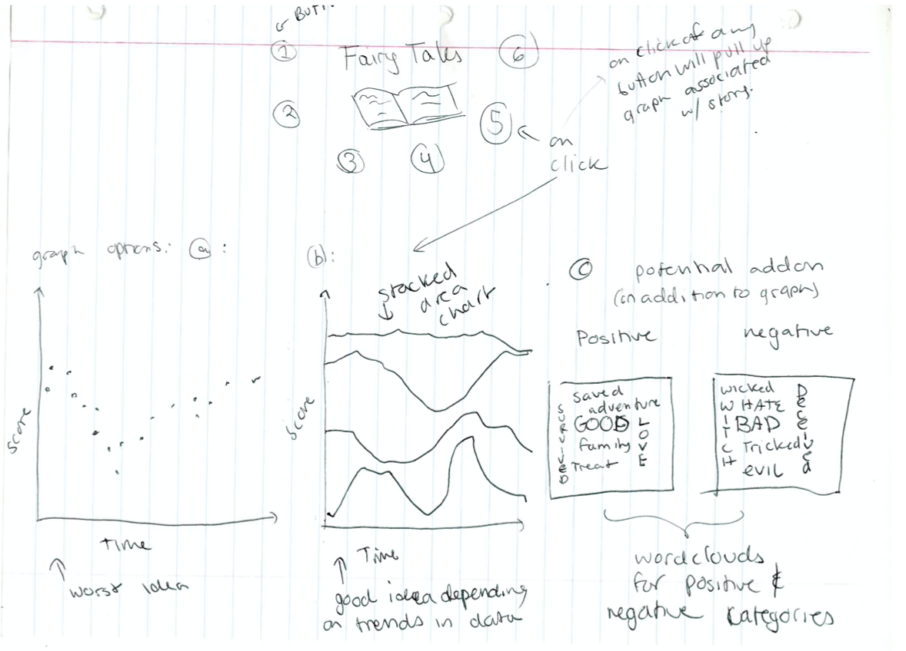
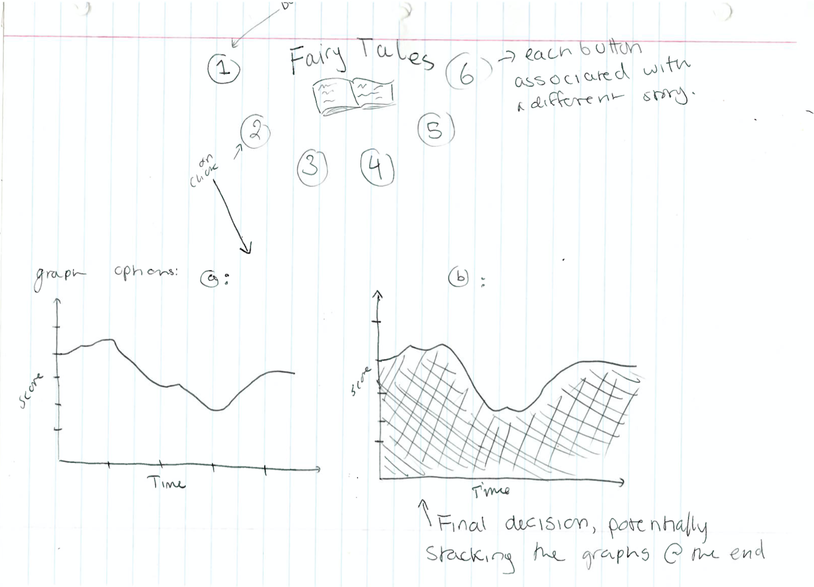

For this visualization I am particularly interested in the story arcs of the fairytales in this dataset (englishfairytales.txt). I want to be able to answer the question: are there similar story arcs in the different tales? What is the path a story takes from its setup, to its conflict to eventually its (hopefully) happy ending. How do these differ or remain constant between stories. Are there patterns that we can see without reading them all?
In order to succeed in my above goals I will perform sentiment analysis on 6 of the stories in the english fairy tales dataset. I will score words based on their positivity or negativity and then graph them. I believe that performing this analysis on every story in the set would be overcomplicated and confusing for a reader. I want to make it clear which story is being analyzed, so I will allow users to navigate my page by clicking back and forth between stories and highlighting the current story being graphed.
I want to create a graph of word sentiment over time in the story. This will hopeflly indicate some trend in the story. I will implement buttons to switch between stories so that they can be compared easily, with the initial load page being blank as to not confuse a reader before beginning their analysis. I will also create animations for the transitions of the graphs so that a reader can see the change (or lack thereof) in shape of the story arc.
The images of my sketches contain the general layout i want, with multiple options for graph types. I will, in the end, only pick 1-2 of these graph types.
 For my final design I was able to implement almost everything that I had hoped to. I initially planned on creating a stacked chart so as to more easily compare stories on the same page without having to click back and forth between graphs. However, after actually seeing the sentiment graphs of each story I realized that they were a bit hectic and did not show a similar arc as I hoped they would. I decided that stacking these graphs would be too chaotic and hard to understand for a user. I initially was deciding between a line chart and an area chart, as I felt that both of these showed more continuity between data points than other forms of charts. I decided on an area chart as I felt that the filled in space was a better visualizer of when the story was more positive (more filled in area) or more negative (less area) rather than just indicating it with the height of a line. I decided on icons instead of simple button shapes for my selection as a subtle reminder of the content that is being analyzed so one might not have to refer back to the title or description. I created the animations, as stated in my initial goals, to highlight the similarities and differences between charts by dynamically moving one chart to become the new one. If I were to have more time for this project, I might have created a scatter plot of sentiment scores, and then created a linear or polynomial model to fit the data. I believe a regression line might show more similarities between stories than an area chart of the raw scores. I also considered showing two word clouds of positive and negative words so as to give the viewer an idea about the content of the story.